Semesterprojekt · Individuelt · Vanilla JS/SCSS · Ingen frameworks
Cybersikker
En interaktiv chatbot-simulation, der lærer studerende at genkende manipulation — bygget som et datadrevet system fra bunden
Projektet er en individuel opgave fra 2. semester: udvikl en interaktiv brugergrænseflade i HTML, SCSS og vanilla JavaScript, der formidler et selvvalgt emne inden for datasikkerhed til studerende. Løsningen blev en chatbot-simulation, hvor brugeren gradvist mødes med tillid, pres og til sidst et valg — og selv oplever konsekvensen af sin egen adfærd.
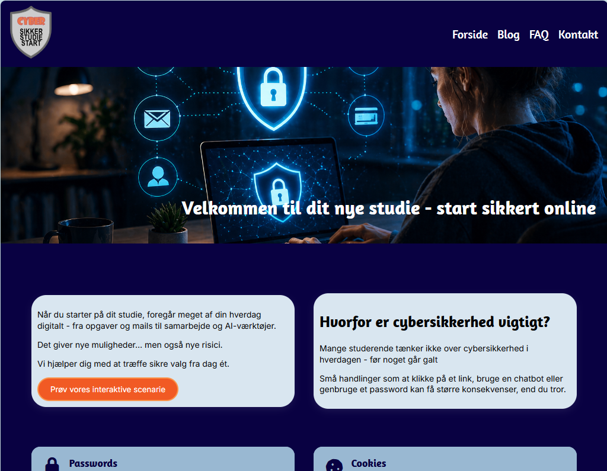
Desktop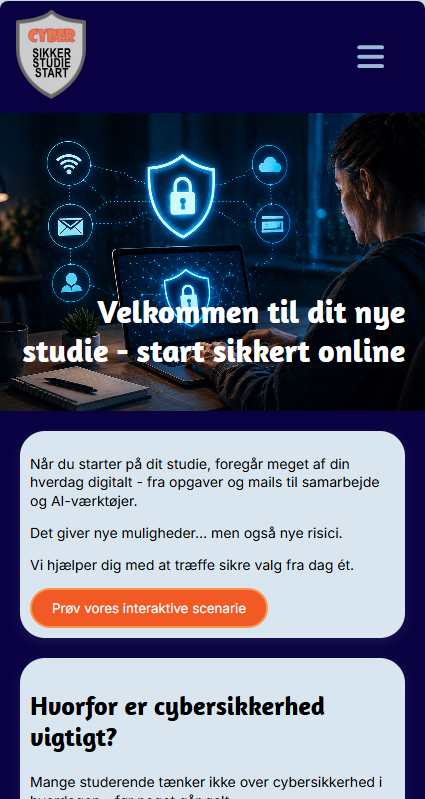
MobilBrief
Opgaven
Kravet var klart afgrænset: en responsiv, interaktiv brugergrænseflade i ren HTML/SCSS/JavaScript — ingen frameworks — med et forgrenet scenarie, der formidler et selvvalgt datasikkerhedsemne til studerende på erhvervsakademier. Scenariet skulle som minimum have flere trin, mindst ét valg med konsekvenser og mindst to mulige slutninger.
Multimedieproduktion 2, "Interaktive Brugeroplevelser" — 2. semester
Individuelt projekt, 30% af semesterporteføljen, bedømt efter 7-trinsskalaen
7. april – 8. maj 2026
"Hvordan kan en interaktiv brugergrænseflade med et forgrenet scenarie udviklet i HTML, SCSS og Vanilla JavaScript guide studerende på erhvervsakademier til at træffe mere sikre valg i digitale situationer?"
MMDsEDK25B · Multimediedesign, IBA Erhvervsakademi Kolding
Den første idé
Idéen, der ikke blev til noget Et lille fund — slå JavaScript til for at se det.
Den første idé opstod af en konkret oplevelse fra undervisningen: links fra undervisere er ofte fulgt af en cookie-/tracking-samtykke-popup om "samarbejdspartnere" — relevant i en privat sammenhæng, men malplaceret i en studiekontekst, hvor man ikke selv har valgt de virksomheder. Idéen blev undersøgt grundigt i sparring med ChatGPT: et forgrenet scenarie om at modtage et undervisningslink, blive mødt af en tracking-popup og vælge, hvordan man håndterer den — med tre skitserede slutninger (fra ukritisk accept til en bevidst, privat tilgang).
"Det er faktisk en rigtig stærk og meget realistisk idé, og den passer ekstremt godt til projektkravene."
Ved forsøget på at omsætte idéen til et fungerende flowchart gik processen i stå — konceptet viste sig svært at oversætte til en fungerende UX/UI-struktur i praksis. Fremfor at presse en idé, der ikke ville lykkes, blev den bevidst forkastet.
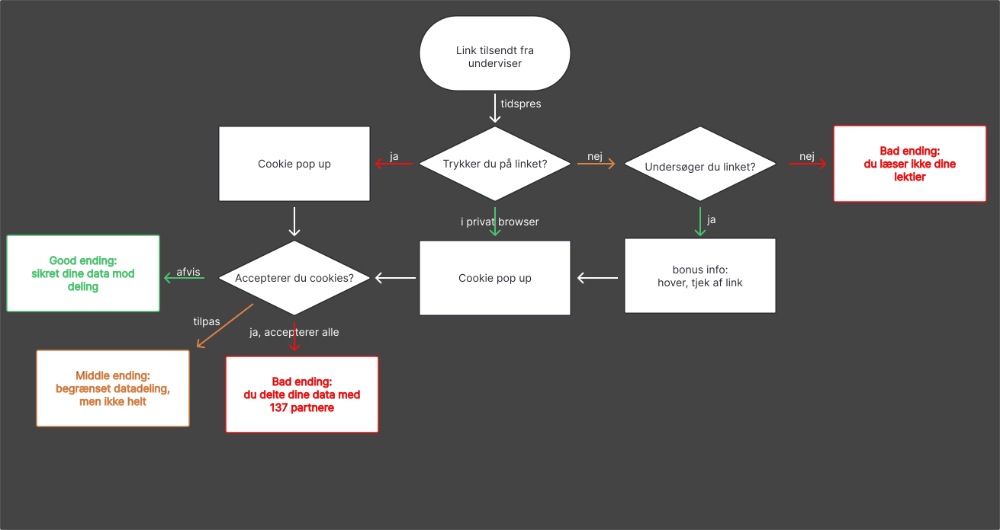
Flowchart v1 · den forkastede idéIdéen findes dokumenteret i en gemt ChatGPT-samtale, som en del af AI-loggen (se afsnit 9).
Pivot
Samme kerne, ny form
Samme dag konceptet gik i stå, blev en ny idé vurderet: at bruge en chatbot som omdrejningspunkt i stedet. Den nye idé bevarede kernen fra den oprindelige — tillid til en tilsyneladende legitim digital tjeneste, gradvis datadeling, konsekvenser af valget — men i en form, der var langt lettere at udvikle og teste i praksis. Et nyt flowchart blev udarbejdet samme dag, og det blev den endelige retning.
En chatbot-popup møder brugeren med hjælpsomhed, og forsøger gradvist — gennem en række spørgsmål og opfordringer — at få brugeren til at dele mere, end der er grund til. Formålet er ikke at skræmme, men at gøre brugeren opmærksom på, hvor let tillid kan misbruges, og hvordan man genkender det undervejs.
forskellige udfald i alt — nogle belønner et kritisk, tilbageholdende valg, andre viser tydeligt, hvad der kan gå galt, når man deler for meget eller stoler blindt. Hvert udfald giver brugeren konkret feedback og et konkret sikkerhedsråd, farvekodet efter hvor sikkert eller risikabelt valget var.
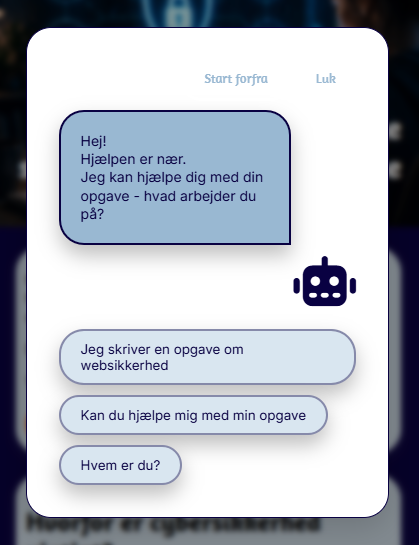
Trin 1
Første kontakt
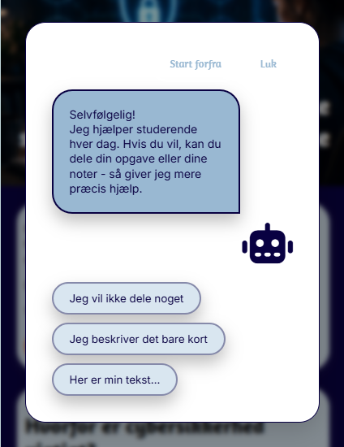
Trin 2
Bedes dele mere
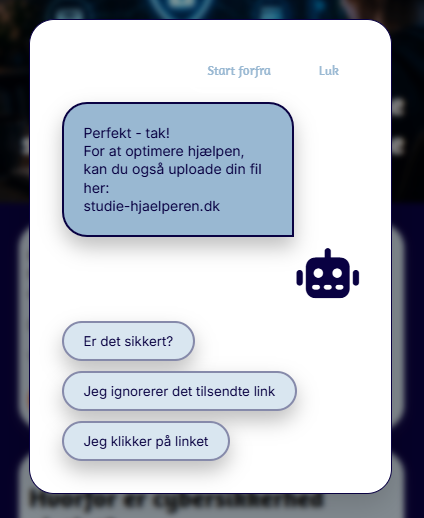
Trin 3
Presset stiger
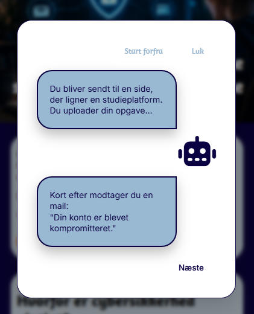
Trin 4
Konsekvens
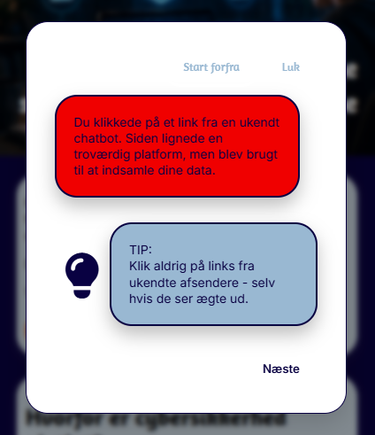
Trin 5
Feedback
Flowchartets to versioner
At tegne en beslutning, før man koder den
Version 1 af flowchartet var en simpel, forgrenet skitse uden klare kategorier — nok til at få idéen ned, men svær at kvalitetssikre og bruge som grundlag for kode. Version 2 blev bygget om med tydelige swimlanes (introduktion → opbygning af tillid → risikovalg → udfald) og en eksplicit legend, der skelner mellem brugerhandlinger, systemhandlinger, beslutninger og feedback. Det gjorde strukturen langt lettere at omsætte direkte til det datadrevne scenariesystem i kode (se afsnit 6).
 Flowchart v1
Flowchart v1
 Flowchart v2
Flowchart v2
Teknisk arkitektur
Data frem for hardcoding Et lille fund — slå JavaScript til for at se det.
Chatbotten er bygget som en dynamisk popup i vanilla JavaScript, hvor selve indholdet — dialoger, forgreninger og feedback — er samlet i ét datadrevet array. Hvert scenarie har et unikt id og en type (dialog, information eller feedback-udfald), så navigationen styres af data frem for hardcodet logik i selve programmet. Det betyder, at nye scenarier kan tilføjes eller fjernes, uden at resten af systemet skal skrives om — en bevidst arkitektonisk beslutning, der rækker ud over opgavens minimumskrav.
JavaScript: variabler, betingede udsagn, funktioner, event listeners, DOM-manipulation, datadrevne objekter — alt i vanilla JS, ingen frameworks
SCSS struktureret i partials (knapper, kort, chatbot, variabler) med variabler, nesting og mixins for en vedligeholdelsesvenlig kodebase
Tilgængelighedskrav indbygget i selve interaktionslaget, ikke lagt på bagefter (se afsnit 7)
export const scenarier = [
{
id: "intro",
type: "question",
tekst: `Hej! Jeg kan hjælpe dig...`,
svar: [
{ tekst: "Jeg skriver en opgave om websikkerhed", næste: "share" },
{ tekst: "Hvem er du?", næste: "present-ai" }
]
},
{
id: "phish",
type: "info",
tekst: `Du bliver sendt til en side, der ligner en studieplatform...`,
konsekvens: `Kort efter modtager du en mail: "Din konto er kompromitteret."`,
cta: `clicked`
}
];
Tilgængelighed
Også en chatbot skal kunne betjenes uden mus
En interaktiv chatbot-modal er let at bygge, så den kun virker med mus og øjne. Her var fokus på tastaturnavigation, en fokusfælde der holder brugeren inde i dialogen mens den er åben, og fuld understøttelse af tab- og escape-tasterne — både i chatbotten og i sitets hamburgermenu.
Tastaturnavigation gennem hele scenariet
Fokusfælde i chatbot-modalen (fokus forlader ikke dialogen, mens den er åben)
Escape lukker dialogen; tab bevæger sig kun inden for den
Skærmlæservenlig, tilgængelig mobilmenu
Det færdige resultat
Cybersikker — live
Det færdige site samler chatbot-simulationen, designsystemet og tilgængelighedsarbejdet i én sammenhængende oplevelse.
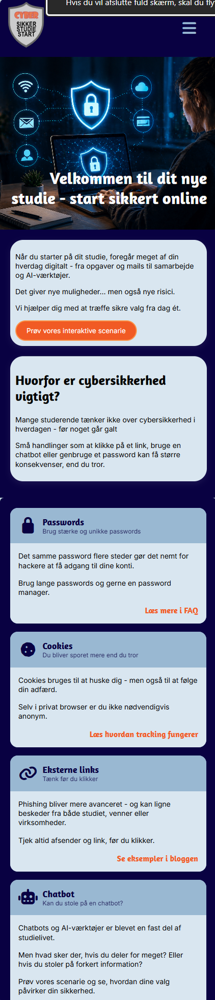
Forside — fuld mobilvisning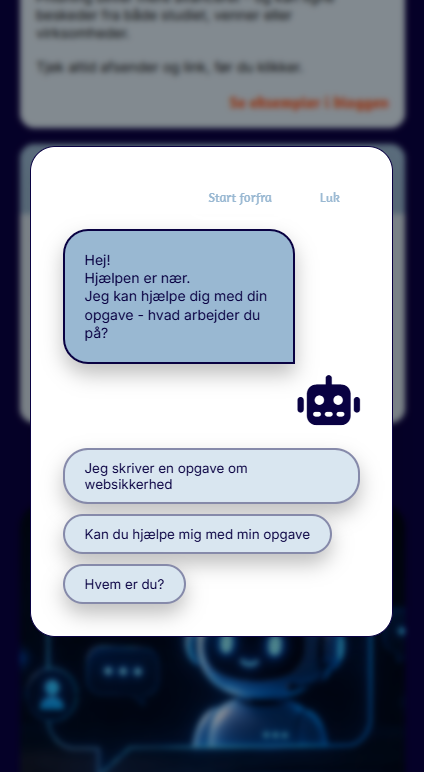

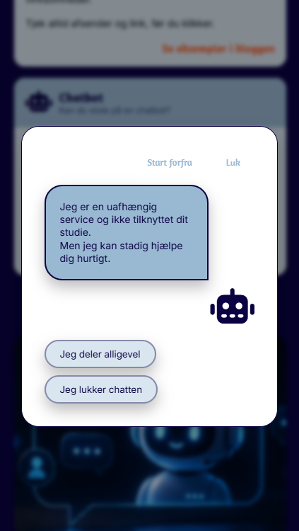

Amaranth (overskrifter) · Inter (brødtekst)
heididesire.dk/cybersikker · GitHub: github.com/heikri01/sem0202
AI som samarbejdspartner
En måned med ChatGPT som sparringspartner
AI-brugen i dette projekt er ikke et enkelt værktøjsopslag, men en løbende dialog gennem hele forløbet — fra at vurdere den første, forkastede idé, til at få hjælp til konkrete tekniske forhindringer undervejs (en hamburgermenu, der ikke ville virke; en oprydning af kodefilerne mod slutningen).
Vurdering af den oprindelige idé, og de første huller i den
Forsøget på at kvalitetssikre det første flowchart, der gik i stå
Pivoten: ny idé vurderet og valgt samme dag
Opsætning af designsystem og komponenter i Figma
Teknisk hjælp til hamburgermenu og det datadrevne scenariesystem
Oprydning af koden og finpudsning af det afsluttende paper
Pointen: AI blev brugt til sparring og tekniske forhindringer undervejs — men både beslutningen om at forkaste den første idé, den endelige systemarkitektur og alt indhold i chatbot-scenariet er egne, bearbejdede valg.
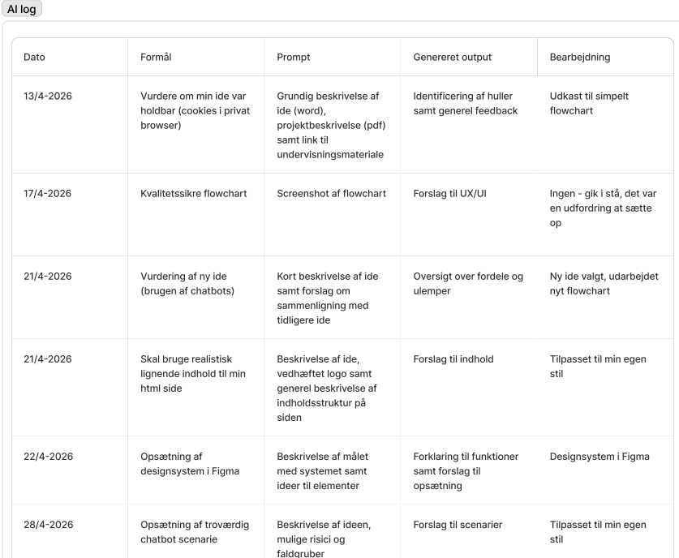
Udsnit af AI-loggenDette er en anden liste end porteføljens fælles AI-log — ChatGPT-forløbet i Cybersikker-projektet hører hjemme her, i selve case studien.
Refleksion & læring
Formidlingen er mit stærkeste kort
Cybersikker blev det projekt, hvor det for alvor stod klart for mig, hvor min styrke og interesse ligger: i brugeroplevelsen omkring indholdet, historien og hvordan budskabet formidles til brugeren — mere end i, hvordan koden er bygget op bag kulisserne. AI-assistancen gjorde det muligt at komme hele vejen i mål teknisk, men det var arbejdet med selve scenariet, tonen i chatbottens replikker og at gøre en tør sikkerhedspointe til noget, brugeren selv oplever konsekvensen af, jeg selv brændte for og arbejdede bedst med.
At en idé kan være konceptuelt stærk og stadig være den forkerte at bygge videre på — og at det er en gyldig, professionel beslutning at forkaste den, når den ikke fungerer i praksis.
At jeg både interesserer mig mere for og arbejder langt bedre med fokus på indhold og kommunikation udadtil end med den bagvedliggende kodeopbygning — en erkendelse, dette projekt gjorde tydelig.
At AI er stærkest som sparringspartner og teknisk hjælp undervejs, ikke som erstatning for egne indholdsmæssige valg.